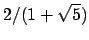

Next: 5.21.44.3 square Up: 5.21.44 size Previous: 5.21.44.1 noratio Contents Index
set size ratio <ratio>
The command:
set size ratio x
sets the aspect ratio of plots produced by PyXPlot. The height of resulting
plots will equal the plot width, as set by the set width command,
muliplied by this aspect ratio. The value  in the above statement can be
substituted with any positive value, for example:
in the above statement can be
substituted with any positive value, for example:
set size ratio 2.0
would cause PyXPlot to produce plots that are twice as high as they are wide.
The default aspect ratio which PyXPlot uses is a golden ratio of , which matches that of a sheet of A4 paper.